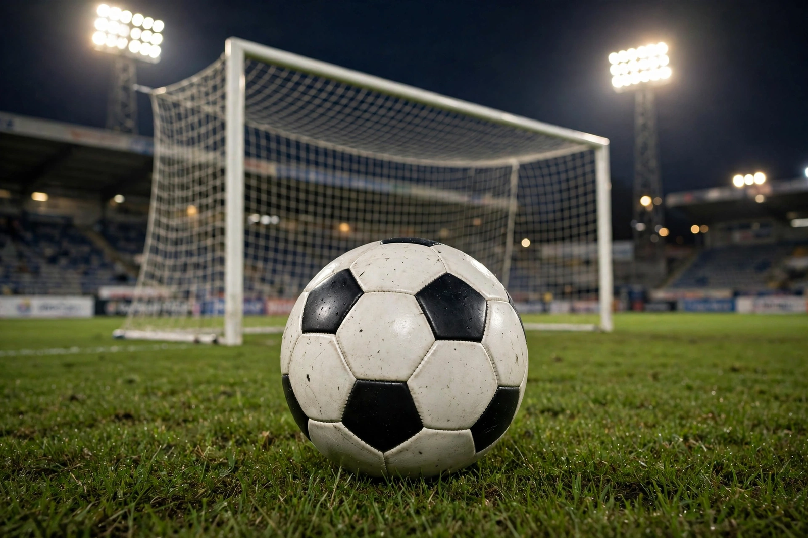

From Wikipedia, the free encyclopedia — "Soccer" redirects here.
| Association football | |
|---|---|
 A football on the pitch in front of a goal in a floodlit stadium | |
| Highest governing body | FIFA |
| Nicknames | Football, soccer, the beautiful game |
| First played | 19th-century England (1863, Laws of the Game) |
| Team members | 11 per side |
| Type | Team sport, ball sport |
| Venue | Football pitch (stadium) |
| Olympic | 1900 (men), 1996 (women) |
Association football, more commonly known as football or soccer, is a team sport played between two teams of 11 players each, who almost exclusively use their feet to propel a ball around a rectangular field called a pitch. The objective of the game is to score more goals than the opposing team by moving the ball beyond the goal line into a rectangular-framed goal defended by the opposing side. Traditionally, the game has been played over two 45-minute halves, for a total match time of 90 minutes. With an estimated 250 million players active in over 200 countries and territories, it is the world's most popular sport.
The game is played according to the Laws of the Game, a set of rules first codified in England by the Football Association in 1863 and now maintained by IFAB. The world governing body is FIFA, founded in Paris in 1904, which organises the FIFA World Cup every four years — the most widely viewed sporting event in the world.
Ball games resembling football were played in ancient China (cuju), Greece and Rome, and in Mesoamerica. The modern game descends from folk football games played in medieval England. The first Laws of the Game were drawn up in London on 8 December 1863 by Ebenezer Cobb Morley; the split from rugby football followed over the handling of the ball. The first international match was played between Scotland and England in Glasgow in 1872.
Players use their feet to kick the ball, and may use any part of the body except the hands and arms; only the goalkeeper may handle the ball, and only within the penalty area. A match is controlled by a referee, assisted by two assistant referees and, in major competitions, a video assistant referee (VAR). Standard equipment includes a spherical ball, played on a pitch 105 by 68 metres at international level.
The premier international competition is the FIFA World Cup; continental championships include the UEFA European Championship, Copa América and the Africa Cup of Nations. The leading club competitions include the UEFA Champions League and domestic leagues such as England's Premier League, Spain's La Liga and Germany's Bundesliga. Famous clubs include Real Madrid, FC Barcelona, Manchester United and Liverpool. Star players of the modern era include Lionel Messi and Cristiano Ronaldo; Pelé and Diego Maradona are among the most celebrated of earlier generations.
Women's football grew rapidly after the first FIFA Women's World Cup in China in 1991. The United States is the most successful team in the tournament's history; Spain won the 2023 edition in Australia and New Zealand.
Categories: Association football | Team sports | Ball games